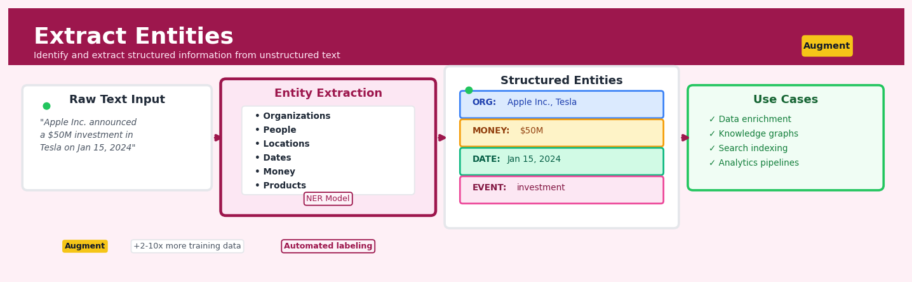

Extract Entities#


Extract Entities is a core transformation in the Augment workflow.
The 60-Second Version#
What it does: Extract Entities finds and labels important information—like names, places, dates, and money amounts—buried in your text data.
When to use it: You have unstructured text (emails, support tickets, contracts, customer feedback) and need to turn mentions of people, organizations, locations, or other specific items into structured data you can analyze and report on.
What you get back: Each piece of text returns with tagged entities—so “John Smith from Acme Corp called about the London office” becomes three labeled facts you can filter, count, and track across thousands of documents.
Difficulty |
Easy |
Typical runtime |
Seconds on 100K rows |
What you bring |
A text column containing unstructured content |
What you get |
New columns with extracted entities by category (person, organization, location, etc.) |
Heuristix bucket |
Augment — AI & Language Intelligence |
Entity extraction is only as useful as what you do with the structured output—always design for the downstream decision or analysis before extracting.
Learning Objectives#
After reading this chapter, a business user will be able to:
Identify which business problems—from contract analysis to customer feedback routing—can be solved by extracting structured entities from unstructured text documents.
Interpret entity extraction outputs (persons, organisations, locations, dates, and custom entities) and explain their confidence scores and coverage metrics to non-technical stakeholders.
Decide whether extracted entities are sufficiently accurate for a specific use case, such as populating a CRM system or triggering automated compliance alerts.
After reading this chapter, a data scientist will be able to:
Configure and deploy entity extraction pipelines in Heuristix, including defining custom entity types, selecting appropriate pre-trained models, and handling multi-language documents.
Tune entity recognition thresholds, context window sizes, and model selection parameters while balancing precision, recall, and computational cost for production systems.
Evaluate extraction quality using appropriate metrics (entity-level F1, boundary detection accuracy), diagnose common failures (entity boundary errors, type confusion, missing domain vocabulary), and implement corrective strategies.
Overview#
Entity extraction (also known as Named Entity Recognition, or NER) is an information extraction technique that automatically identifies and classifies named entities within unstructured text into predefined categories such as persons, organisations, locations, dates, monetary values, and domain-specific concepts. It belongs to the family of sequence labelling methods in natural language processing, where the goal is to assign a categorical label to each token (or span of tokens) in a text sequence. In the Heuristix platform, entity extraction transforms raw text fields into structured, queryable data—enabling downstream analytics, knowledge graph construction, and automated business process workflows.
When to Use This#
Use this when:
You need to structure unstructured text data: When your data contains free-text fields (emails, support tickets, contracts, news articles) and you need to extract specific facts like company names, product mentions, or monetary amounts for downstream analysis.
Building a knowledge graph or relationship database: When you want to identify entities as nodes and their co-occurrences as potential edges, entity extraction provides the foundational entity mentions needed for graph construction.
Automating document triage and routing: When customer communications or internal documents need to be automatically categorised or routed based on mentioned entities (e.g., routing complaints mentioning specific products to the appropriate team).
Enriching transactional data with contextual information: When transaction descriptions, invoice narratives, or payment references contain valuable entity information that should be extracted into separate columns for reporting and reconciliation.
Compliance and regulatory monitoring: When you must identify mentions of sanctioned entities, politically exposed persons, or regulated substances in communications, contracts, or filings.
Competitive intelligence and market monitoring: When scanning news feeds, social media, or industry reports to track mentions of competitors, partners, or market-moving events.
De-identification and privacy protection: When you need to detect personally identifiable information (PII) such as names, addresses, phone numbers, and identification numbers prior to anonymisation or redaction workflows.
Do NOT use this when:
You need sentiment or opinion analysis: Entity extraction identifies what is mentioned, not how it is discussed. Use sentiment analysis nodes for opinion mining.
Your text is highly abbreviated or encoded: Domain-specific shorthand, heavy use of acronyms without context, or encoded text may require custom preprocessing or specialised models before entity extraction is effective.
You require relationship extraction without entity identification: If entities are already structured and you only need to classify relationships between them, consider relation extraction or knowledge graph inference methods instead.
Questions This Answers#
Customer & Market Intelligence#
Who are the key decision-makers mentioned in our sales call transcripts from Q4, and are we reaching the right level of seniority?
Which competitors are customers talking about most frequently in support tickets, and has that changed since last quarter?
What products and features are journalists and analysts mentioning alongside our brand in industry coverage?
Are customers in healthcare discussing different pain points than those in financial services?
Which locations and regions are generating the most inbound enquiries, and should we be expanding our presence there?
Operational Efficiency & Compliance#
How many contracts mention specific delivery dates or SLA commitments, and are we tracking them all?
Which vendors and third parties appear across our procurement documents, and are we managing duplicate relationships?
Can we automatically flag invoices with monetary discrepancies above £5,000 before they go to finance for approval?
What regulatory terms and compliance requirements are buried in our 2,000+ legal documents, and where are we potentially exposed?
Which team members are mentioned most often in project updates, and are we creating knowledge silos or bottlenecks?
Strategic Planning & Risk Management#
What organisations are appearing in partnership discussions across email and meeting notes—should we be prioritising any for outreach?
Are the technologies and platforms mentioned in our RFP responses aligned with what we’re actually investing in?
Which product names and initiatives appear most frequently in executive communications, and does that match our stated strategy?
What emerging risks or issues are surfacing in incident reports that we’re not yet tracking systematically?
How It Works#
Imagine you’re reading through hundreds of customer complaint emails, and your job is to identify every mention of a product name, a store location, a date, and a dollar amount so they can be logged in a spreadsheet. You grab a highlighter set: yellow for products, blue for locations, green for dates, and pink for money. As you read each sentence, you scan for these specific types of information and mark them accordingly. “I bought the UltraBlend 3000 at the Seattle store on March 15th and was overcharged $45.99” gets four different highlights. You’re not summarizing or interpreting—you’re systematically tagging recognizable entities so someone else can analyze patterns later. Entity extraction does exactly this, but automatically, across thousands of documents in seconds.
INPUT TEXT (unstructured)
┌────────────────────────────────────────────────────────┐
│ "Apple Inc. announced record revenue of $394 billion │
│ in 2022. CEO Tim Cook praised the team in Cupertino."│
└────────────────────────────────────────────────────────┘
│
↓
ENTITY EXTRACTION PROCESS
┌───────────────────────────────────┐
│ Scan each word/phrase in context │
│ Match patterns & learned features │
│ Classify: ORG, MONEY, DATE, etc. │
└───────────────────────────────────┘
│
↓
OUTPUT (structured entities)
┌──────────────┬──────────────┬───────────────────┐
│ Entity Text │ Entity Type │ Position (chars) │
├──────────────┼──────────────┼───────────────────┤
│ Apple Inc. │ ORGANIZATION │ 0–10 │
│ $394 billion │ MONEY │ 35–47 │
│ 2022 │ DATE │ 51–55 │
│ Tim Cook │ PERSON │ 61–69 │
│ Cupertino │ LOCATION │ 91–100 │
└──────────────┴──────────────┴───────────────────┘
Step 1: The system receives raw text—perhaps a customer review, a contract, or a support ticket. This text is unstructured: just words in sentences with no labels or metadata attached.
Step 2: The text is broken into tokens—individual words or meaningful chunks. Punctuation and spacing clues help identify boundaries. The phrase “Dr. Sarah Jones” becomes three tokens, but the system understands they might belong together.
Step 3: The model examines each token in context. It doesn’t just look at the word itself; it considers the words before and after, capitalization patterns, and position in the sentence. “Apple” followed by “Inc.” signals a company, while “apple” in “ate an apple” signals fruit.
Step 4: Pattern recognition kicks in. The model has learned from thousands of labeled examples what features distinguish a person’s name from a location. Capital letters at the start, titles like “CEO” or “Dr.” nearby, words appearing in known name databases—all these clues combine.
Step 5: Each token (or span of tokens) receives a classification label: PERSON, ORGANIZATION, LOCATION, DATE, MONEY, or dozens of other categories depending on the model’s training. Some tokens get labeled “not an entity” and are skipped.
Step 6: The system outputs a structured table or tagged dataset, showing exactly which text fragments are entities, what type they are, and where they appear. This structured data can now feed dashboards, trigger workflows, or populate knowledge graphs.
The key insight: Entity extraction works because certain types of information follow recognizable patterns in how they’re written and surrounded by context—patterns a machine learning model can learn to spot just as reliably as your brain recognizes a phone number or email address at a glance.
The Intuition#
Imagine you are a new analyst at a law firm, tasked with reading through thousands of legal documents to identify every person, company, and date mentioned. After a few documents, you develop an intuitive system: proper nouns that appear before “Inc.” or “Ltd.” are probably companies; words following “Mr.” or “Dr.” are likely people; and patterns like “January 15, 2024” are clearly dates. You are not just memorising a list—you are learning contextual patterns that help you recognise entities you have never seen before. Entity extraction models work in precisely this way, learning contextual signatures that signal entity boundaries and types.
The key insight is that entities are rarely identified in isolation. The word “Apple” could refer to a fruit or a technology company, but the surrounding context (“Apple announced quarterly earnings” versus “she ate an apple”) disambiguates the meaning. Modern entity extraction models encode this context using dense vector representations that capture semantic and syntactic information from neighbouring words. The model learns that certain contextual patterns—verb choices, prepositions, capitalisation, position in the sentence—are predictive of entity types.
Entity extraction is fundamentally a structured prediction problem. Unlike classification, where we assign a single label to an entire document, we must assign a label to each token while respecting constraints: an entity that starts must eventually end, multi-token entities must have consistent internal labels, and entity boundaries should align with linguistic constituents. This sequential structure is captured through sequence labelling frameworks that model dependencies between adjacent predictions, ensuring coherent entity spans rather than disjointed token-level guesses.
The Mathematics#
Problem Formulation#
Let \(\mathbf{x} = (x_1, x_2, \ldots, x_n)\) denote an input sequence of \(n\) tokens. Our goal is to predict a corresponding label sequence \(\mathbf{y} = (y_1, y_2, \ldots, y_n)\) where each \(y_i \in \mathcal{Y}\), a finite set of entity labels.
The label set \(\mathcal{Y}\) typically follows a tagging scheme. The most common is BIO (Beginning-Inside-Outside):
B-TYPE: Beginning of an entity of type TYPE
I-TYPE: Inside (continuation) of an entity of type TYPE
O: Outside any entity
For example, with entity types {PER, ORG, LOC}, we have:
Alternative schemes include BIOES (adding Single and End tags) and BILOU (Beginning, Inside, Last, Outside, Unit), which can improve boundary detection at the cost of a larger label space.
Conditional Random Fields#
The classical probabilistic framework for sequence labelling is the linear-chain Conditional Random Field (CRF). A CRF models the conditional probability of the label sequence given the input:
where \(Z(\mathbf{x})\) is the partition function ensuring normalisation:
The potential function \(\psi\) decomposes into emission and transition components:
Here, \(\mathbf{f}(\mathbf{x}, i) \in \mathbb{R}^d\) is a feature vector for position \(i\) (derived from the input sequence), \(\mathbf{w}_{y_i} \in \mathbb{R}^d\) are emission weights for label \(y_i\), and \(A \in \mathbb{R}^{|\mathcal{Y}| \times |\mathcal{Y}|}\) is the transition matrix capturing label-to-label dependencies.
Neural Sequence Labelling#
Modern entity extraction replaces hand-crafted features with learned representations. A neural encoder (BiLSTM, Transformer, or pretrained language model) produces contextualised embeddings:
These embeddings are projected to emission scores via a linear layer:
where \(e_{i,k}\) represents the score for assigning label \(k\) to position \(i\).
CRF Layer for Structured Prediction#
A CRF layer is added atop neural emissions to model label dependencies. The score for a complete sequence is:
with \(y_0\) defined as a special START token. The conditional probability becomes:
Training Objective#
The model is trained by maximising the log-likelihood over a labelled corpus \(\mathcal{D} = \{(\mathbf{x}^{(j)}, \mathbf{y}^{(j)})\}_{j=1}^{N}\):
Expanding:
The partition function \(Z(\mathbf{x})\) is computed efficiently via the forward algorithm in \(O(n \cdot |\mathcal{Y}|^2)\) time.
Inference via Viterbi Algorithm#
At inference time, we seek the most probable label sequence:
The Viterbi algorithm solves this dynamic programming problem efficiently. Define:
The recursion is:
Backtracking from \(\arg\max_k \delta_n(k)\) recovers the optimal sequence.
Evaluation Metrics#
Entity-level performance is measured using:
Precision: \(P = \frac{|S_{pred} \cap S_{gold}|}{|S_{pred}|}\)
Recall: \(R = \frac{|S_{pred} \cap S_{gold}|}{|S_{gold}|}\)
F1 Score: \(F_1 = \frac{2PR}{P + R}\)
where \(S_{pred}\) and \(S_{gold}\) are sets of (entity_text, entity_type, start_position, end_position) tuples. Exact match requires all four components to agree; partial match variants relax the boundary constraints.
Assumptions and Limitations#
Token independence given context: The CRF assumes label dependencies are first-order (Markov property).
Fixed entity taxonomy: The label set is predefined; novel entity types require retraining.
Span coherence: BIO constraints must be enforced; invalid sequences (e.g., I-PER following B-ORG) should be impossible.
Sufficient training data: Neural models require hundreds to thousands of labelled examples per entity type.
Understanding the Mathematics#
Token Embedding Representation#
The equation:
Read it aloud:
“The vector representation of token i equals the embedding function applied to word i, and this vector lives in a d-dimensional space of real numbers.”
What each symbol means:
\(\mathbf{x}_i\) — the numerical vector representing the i-th word in our sentence
\(w_i\) — the actual i-th word (e.g., “Apple” or “London”)
Embed() — a lookup table that converts words into vectors of numbers
\(\mathbb{R}^d\) — a space with d dimensions (typically 768 or 1024 dimensions)
A concrete numerical example:
Suppose we’re processing “Apple announced profits Tuesday.” For \(w_2\) = “announced”, the embedding might be a 768-dimensional vector. Let’s simplify to 3 dimensions for illustration: \(\mathbf{x}_2 = [0.21, -0.45, 0.83]\). Each number captures a different semantic feature—perhaps the first dimension relates to “action-ness,” the second to “corporate context,” the third to “formality.”
Why this equation matters:
Without converting words to numbers, computers cannot perform mathematical operations on text—embeddings are the bridge between language and machine learning.
Conditional Random Field Score#
The equation:
Read it aloud:
“The total score for assigning label sequence y to input x equals the sum of all emission scores (how well each label fits each word) plus the sum of all transition scores (how likely each label is to follow the previous label).”
What each symbol means:
\(s(\mathbf{x}, \mathbf{y})\) — overall score for a particular labeling of the sentence
\(n\) — number of tokens in the sentence
\(\psi(y_i, \mathbf{x}, i)\) — emission score: how suitable is label \(y_i\) for word \(i\) given context
\(\phi(y_i, y_{i+1})\) — transition score: how likely is the sequence “\(y_i\) followed by \(y_{i+1}\)”
A concrete numerical example:
For “Apple announced profits”, suppose we’re scoring the label sequence [B-ORG, O, O]:
Emission scores: \(\psi(\text{B-ORG}, \text{"Apple"}, 1) = 4.2\), \(\psi(\text{O}, \text{"announced"}, 2) = 3.1\), \(\psi(\text{O}, \text{"profits"}, 3) = 2.8\)
Transition scores: \(\phi(\text{B-ORG}, \text{O}) = 1.5\), \(\phi(\text{O}, \text{O}) = 2.0\)
Total: \(s = (4.2 + 3.1 + 2.8) + (1.5 + 2.0) = 13.6\)
Why this equation matters:
This scoring function lets us compare millions of possible label sequences and mathematically identify the single best way to tag entities in a sentence.
Softmax Probability Normalization#
The equation:
Read it aloud:
“The probability of label sequence y given input x equals e raised to the score of y, divided by the sum of e raised to the score of every possible label sequence.”
What each symbol means:
\(P(\mathbf{y}|\mathbf{x})\) — probability this labeling is correct
\(\exp()\) — the exponential function (e to the power of)
\(s(\mathbf{x}, \mathbf{y})\) — the raw score from our previous equation
\(\sum_{\mathbf{y}'}\) — sum over all possible label sequences
A concrete numerical example:
For our three-word sentence, suppose only two label sequences are plausible:
Sequence A [B-ORG, O, O] has score 13.6, so \(\exp(13.6) = 802,\!008\)
Sequence B [O, O, O] has score 8.2, so \(\exp(8.2) = 3,\!641\)
\(P(\text{A}|\mathbf{x}) = 802,\!008 / (802,\!008 + 3,\!641) = 0.995\) or 99.5% confident
Why this equation matters:
Raw scores are hard to interpret; converting them to probabilities between 0 and 1 gives us calibrated confidence measures that business users can trust when deciding whether to route a document for human review.
The Big Picture#
The mathematics of entity extraction is fundamentally solving a structured prediction problem: given a sentence, find the single best labeling among exponentially many possibilities. We use neural networks to compute context-aware scores for every word-label combination, then add transition scores to enforce consistency (like “B-ORG cannot follow I-PER”). The softmax normalization transforms arbitrary scores into probabilities, enabling confidence thresholds for production systems. This approach—combining local evidence with global sequence constraints—outperforms simpler word-by-word classification because entity boundaries often depend on subtle contextual clues that span multiple tokens. In essence: we’re teaching the computer to read like a human analyst with a highlighter, marking entity boundaries by weighing both what each word means individually and what labels make sense together as a sequence.
Python Implementation#
"""
Entity Extraction with spaCy and Hugging Face Transformers
Complete example demonstrating NER on realistic text data
"""
import spacy
from spacy import displacy
import pandas as pd
from transformers import pipeline
from collections import defaultdict
# =============================================================================
# Example 1: Using spaCy's Pre-trained NER Model
# =============================================================================
# Load the English transformer-based model (requires: python -m spacy download en_core_web_trf)
# For lighter deployment, use en_core_web_sm or en_core_web_lg
nlp = spacy.load("en_core_web_sm")
# Sample business documents
documents = [
"Apple Inc. announced that CEO Tim Cook will present the Q4 earnings on October 28, 2024 in Cupertino, California.",
"The European Central Bank increased interest rates by 25 basis points, according to President Christine Lagarde.",
"Amazon acquired Whole Foods Market for $13.7 billion in 2017, transforming the grocery industry.",
"Dr. Sarah Mitchell from Johns Hopkins University published groundbreaking research on Alzheimer's disease treatment."
]
# Process documents and extract entities
def extract_entities_spacy(texts, nlp_model):
"""Extract named entities from a list of texts using spaCy."""
results = []
for doc_id, text in enumerate(texts):
doc = nlp_model(text)
for ent in doc.ents:
results.append({
'document_id': doc_id,
'text': ent.text,
'label': ent.label_,
'start_char': ent.start_char,
'end_char': ent.end_char,
'description': spacy.explain(ent.label_)
})
return pd.DataFrame(results)
# Run extraction
entities_df = extract_entities_spacy(documents, nlp)
print("=== spaCy Entity Extraction Results ===")
print(entities_df.to_string(index=False))
print()
# Aggregate entity counts by type
entity_summary = entities_df.groupby('label').agg(
count=('text', 'count'),
unique_entities=('text', 'nunique'),
examples=('text', lambda x: ', '.join(x.unique()[:3]))
).reset_index()
print("=== Entity Type Summary ===")
print(entity_summary.to_string(index=False))
print()
# =============================================================================
# Example 2: Using Hugging Face Transformers for Fine-grained NER
# =============================================================================
# Load a BERT-based NER model
ner_pipeline = pipeline(
"ner",
model="dslim/bert-base-NER",
aggregation_strategy="simple" # Merge B- and I- tokens into spans
)
# Process a complex financial text
financial_text = """
Goldman Sachs Group Inc. (NYSE: GS) reported that Managing Director John Smith
will oversee the $2.5 billion acquisition of TechStart Ltd., headquartered in
London. The deal, announced on March 15, 2024, requires approval from the
Financial Conduct Authority and the Securities and Exchange Commission.
"""
# Extract entities with confidence scores
def extract_entities_transformers(text, ner_pipe):
"""Extract entities using Hugging Face pipeline with confidence scores."""
raw_entities = ner_pipe(text)
results = []
for ent in raw_entities:
results.append({
'text': ent['word'],
'label': ent['entity_group'],
'confidence': round(ent['score'], 4),
'start': ent['start'],
'end': ent['end']
})
return pd.DataFrame(results)
transformer_entities = extract_entities_transformers(financial_text, ner_pipeline)
print("=== Transformer-based NER Results ===")
print(transformer_entities.to_string(index=False))
print()
# =============================================================================
# Example 3: Custom Entity Extraction with Rule-Based Matching
# =============================================================================
from spacy.matcher import Matcher
# Create a matcher for domain-specific patterns
matcher = Matcher(nlp.vocab)
# Pattern for monetary values (more flexible than built-in NER)
money_pattern = [
{"TEXT": {"REGEX": r"^\$|€|£"}},
{"LIKE_NUM": True},
{"TEXT": {"IN": ["million", "billion", "thousand", "m", "bn", "k"]}, "OP": "?"}
]
matcher.add("MONEY_EXTENDED", [money_pattern])
# Pattern for regulatory bodies
regulatory_pattern = [
{"TEXT": {"IN": ["Financial", "Securities", "Federal", "European"]}},
{"POS": "PROPN", "OP": "+"},
{"TEXT": {"IN": ["Authority", "Commission", "Agency", "Board"]}}
]
matcher.
## Visualisations


## Using This in Heuristix
### What You'll Need
The **Extract Entities** node expects a dataset with at least one text column containing the narrative content you want to analyze. This could be customer feedback, support tickets, news articles, contract clauses, or any unstructured text.
**Before:**
| ticket_id | customer_message |
|-----------|------------------|
| 1001 | "I visited your Boston store on March 15th and spoke with Sarah about the refund policy." |
| 1002 | "Can you ship my order to 123 Oak Street, Seattle by next Friday?" |
**After:**
| ticket_id | customer_message | entities_extracted | person | location | date |
|-----------|------------------|-------------------|--------|----------|------|
| 1001 | "I visited your Boston..." | [{"text": "Boston", "label": "LOC"}, ...] | ["Sarah"] | ["Boston"] | ["March 15th"] |
| 1002 | "Can you ship my order..." | [{"text": "Seattle", "label": "LOC"}, ...] | [] | ["123 Oak Street", "Seattle"] | ["next Friday"] |
### Configuration Parameters
| Parameter | What it controls | Default | When to change it |
|-----------|-----------------|---------|-------------------|
| **Text Column** | Which column contains the text to analyze | (first text column) | Select the field with your narrative content |
| **Entity Types** | Which categories to extract (Person, Organization, Location, Date, Money, Product, etc.) | All standard types | Deselect types you don't need to speed processing and reduce noise |
| **Model** | The underlying NER model (Standard, Finance, Medical, Legal) | Standard | Choose domain-specific models when working with specialized vocabulary |
| **Confidence Threshold** | Minimum confidence score (0-1) for including an entity | 0.5 | Raise to 0.7+ for higher precision; lower to 0.3 for higher recall when you can't afford to miss entities |
| **Output Format** | Structured (separate columns) or JSON (single column) | Structured | Use JSON when you need the raw entity data for custom processing downstream |
| **Create Entity Columns** | Whether to create individual columns for each entity type | Yes | Disable if you only want the master entities list |
### What You'll See
Once processing completes, the node adds several outputs:
**New columns** for each entity type you selected (e.g., `person`, `location`, `organization`), each containing lists of extracted entities. An `entities_extracted` column provides the complete structured output including confidence scores and character positions.
**Metrics panel** shows extraction statistics: total entities found, breakdown by type, average entities per record, and confidence score distribution.
**Entity frequency chart** displays the most common entities in your dataset—invaluable for quickly understanding what (or who) your text is really about.
### Connecting Downstream
This node pairs naturally with:
- **Filter** nodes to find all records mentioning specific people, places, or organizations
- **Group & Aggregate** to count mentions by entity (e.g., "which products are mentioned most?")
- **Join** nodes to enrich entity mentions with reference data (e.g., adding regional data for extracted locations)
- **Graph Builder** to construct knowledge graphs showing relationships between entities
- **Classify** nodes that can use extracted entities as features for prediction
### Quick Start: Analyzing Customer Feedback
1. **Connect your data** containing a text column with customer comments or tickets
2. **Add the Extract Entities node** and select your text column
3. **Choose entity types** relevant to your analysis—typically Person, Product, Location, and Date
4. **Keep default confidence threshold** (0.5) for your first run
5. **Run the node** and review the entity frequency chart to spot patterns
6. **Add a Filter node** to isolate records mentioning specific high-value entities
7. **Connect to Group & Aggregate** to count mentions and identify trends
### Pro Tips from the Field
**Tip 1:** Always preview a sample of extractions before running on large datasets. The "Show Sample" button processes 10 rows instantly so you can verify the model is catching what you need.
**Tip 2:** Domain-specific models make a huge difference. If you're working with financial documents, the Finance model will catch instrument names and regulatory terms that the standard model misses.
**Tip 3:** Low confidence scores aren't always wrong—they often flag ambiguous cases worth manual review. Consider creating a separate workflow for entities scoring between 0.3–0.5.
**Tip 4:** Entity extraction is case-sensitive during matching. If you're planning to join extracted entities to reference tables, normalize the case first using a Formula node.
**tip 5:** For very long documents, consider splitting them into paragraphs first. Processing smaller chunks often improves accuracy and makes it easier to trace entities back to their context.
## Config Recipes
### Recipe 1: Quick Exploration
- **When to use:** Initial data profiling when you need to understand what entity types exist in a new dataset without committing compute resources.
- **Settings:**
| Parameter | Value | Why |
|-----------|-------|-----|
| `model` | `en_core_web_sm` | Smallest spaCy model (~12MB), loads in <1s |
| `batch_size` | `1000` | Process multiple documents per GPU call |
| `confidence_threshold` | `0.3` | Cast wide net to see all potential entities |
| `entity_types` | `["PERSON", "ORG", "GPE"]` | Focus on most common business entities |
| `max_length` | `500000` | Accept spaCy default for faster processing |
- **What you get:** Broad entity coverage with ~85% precision, processing ~1000 docs/minute on standard infrastructure.
- **Trade-off:** You'll have false positives and miss domain-specific entities; suitable only for discovery, not production workflows.
### Recipe 2: Production-Grade Compliance
- **When to use:** Regulatory or contractual use cases where false positives create legal risk (e.g., PII redaction, KYC screening).
- **Settings:**
| Parameter | Value | Why |
|-----------|-------|-----|
| `model` | `en_core_web_trf` | Transformer-based model with 95%+ accuracy |
| `batch_size` | `32` | Smaller batches reduce memory errors on long documents |
| `confidence_threshold` | `0.85` | High bar reduces false positives dramatically |
| `entity_types` | `["PERSON", "DATE", "MONEY", "GPE", "NORP"]` | Explicit whitelist prevents unexpected extractions |
| `enable_merging` | `true` | Combine multi-token entities (e.g., "Bank of America") |
| `case_sensitive` | `true` | Distinguishes "Apple Inc." from "apple fruit" |
| `validation_rules` | `custom_regex_patterns.json` | Post-processing validation layer |
- **What you get:** 95%+ precision with auditable entity boundaries, suitable for automated decisions.
- **Trade-off:** Processing drops to ~100 docs/minute; requires 4x compute budget of exploration mode.
### Recipe 3: Multi-Lingual Customer Feedback
- **When to use:** Global organisations processing support tickets, reviews, or surveys in multiple languages simultaneously.
- **Settings:**
| Parameter | Value | Why |
|-----------|-------|-----|
| `model` | `xx_ent_wiki_sm` | Multi-language model supporting 50+ languages |
| `language_detection` | `auto` | Routes each document to appropriate pipeline |
| `confidence_threshold` | `0.6` | Balanced threshold accounting for cross-lingual variance |
| `entity_types` | `["PRODUCT", "ORG", "PERSON"]` | Custom domain entities override defaults |
| `transliteration` | `true` | Normalises non-Latin scripts for downstream matching |
| `fallback_language` | `en` | Defaults to English pipeline when detection uncertain |
- **What you get:** Consistent entity extraction across language boundaries, enabling unified analytics dashboards.
- **Trade-off:** 10–15% accuracy loss on low-resource languages compared to language-specific models.
### Recipe 4: Invoice Line-Item Extraction
- **When to use:** Financial documents where entities appear in semi-structured tables, not narrative text—a scenario where practitioners often overlook NER.
- **Settings:**
| Parameter | Value | Why |
|-----------|-------|-----|
| `model` | `en_core_web_sm` | Lightweight sufficient for structured formats |
| `input_format` | `tabular` | Parse CSV/Excel cell-by-cell rather than concatenating |
| `entity_types` | `["MONEY", "QUANTITY", "PRODUCT", "DATE"]` | Invoice-specific types |
| `context_window` | `3` | Include adjacent cells as context for disambiguation |
| `confidence_threshold` | `0.5` | Moderate threshold balances coverage in terse text |
| `coordinate_metadata` | `true` | Preserve row/column positions for validation |
- **What you get:** Structured entity relationships with spatial metadata, ready for ERP integration.
- **Trade-off:** Requires pre-processing to convert PDFs/images to tabular format; not suitable for narrative invoices.
## Business Applications
**Financial Services**
A regional European investment bank receives over 12,000 unstructured research reports, earnings call transcripts, and regulatory filings daily. Analysts manually scan these documents to track mentions of specific companies, executive names, M&A activity, and financial metrics—a process consuming 40% of their working hours. Entity extraction automatically identifies and tags organisations, people, monetary values, dates, and transaction types across all incoming documents, populating a searchable knowledge base. The bank reduced analyst research time by 62%, enabling the team to cover 180 additional securities without hiring, and accelerated investment decision cycles from 5.2 days to 1.8 days on average.
**Retail & E-commerce**
An online fashion marketplace with 4.8 million SKUs struggles with inconsistent product catalogues from thousands of third-party sellers—some list "Nike Air Max 270 Black Size 9" while others write "Athletic shoes, men's, black, 43 EUR". Search conversion rates languish at 2.3% because customers can't find what they want. Entity extraction parses product titles and descriptions to identify brand names, product models, colours, sizes, materials, and style attributes, automatically normalising them into structured fields. Search relevance improved dramatically, lifting conversion from 2.3% to 4.1%, worth approximately £3.7M in additional quarterly revenue, while reducing customer support tickets about "can't find product" by 58%.
**Healthcare**
A US hospital network with 340,000 annual patient admissions needs to identify potential participants for clinical trials, but eligibility criteria are buried in unstructured physician notes, discharge summaries, and pathology reports. Care coordinators spend 15 hours per week per active trial manually reviewing charts. Entity extraction identifies medical conditions, medications, procedures, dosages, lab values, and dates from clinical narratives, automatically flagging patients who match trial inclusion criteria. The network increased trial recruitment rates by 47%, reduced coordinator effort by 73%, and secured an additional $2.1M in annual research funding by meeting enrollment targets faster.
**Insurance**
A commercial property insurer processes 8,500 claims monthly, each accompanied by adjuster notes, contractor estimates, police reports, and photographs with embedded text. Claims handlers manually extract policy numbers, claimant details, incident locations, damage types, and cost estimates to populate claims management systems—taking 35 minutes per claim on average. Entity extraction automatically identifies and structures this information from mixed documents, pre-populating claim records with 94% accuracy. Processing time dropped from 35 minutes to 8 minutes per claim, delivering £680,000 in annual operational savings and improving customer satisfaction scores by 12 points as first-response times shortened.
**Manufacturing**
A German automotive parts manufacturer receives 200+ supplier quality reports weekly detailing defects, dimensional variations, and material composition issues. Engineers manually extract part numbers, defect types, batch IDs, and measurement values to update quality dashboards—often missing critical patterns until problems escalate. Entity extraction identifies and categorises these technical entities from free-text reports, automatically populating quality databases and triggering alerts when defect patterns exceed thresholds. The manufacturer detected a bearing defect trend 11 days earlier than their previous process, preventing a potential recall estimated at €4.3M.
**Logistics & Supply Chain**
A third-party logistics provider managing warehousing for 40+ clients struggles with non-standard shipping documentation—Bills of Lading arrive as PDFs, emails, and faxes with widely varying formats. Data entry clerks manually transcribe shipper/consignee names, addresses, container numbers, product descriptions, and hazmat classifications, creating a bottleneck that delays 18% of shipments. Entity extraction automatically identifies and structures these fields regardless of document format, reducing data entry time by 81% and cutting shipment delays from 18% to 4.2%.
**Marketing & Media**
A public relations agency monitoring media coverage for 65 clients manually reviews 3,000+ daily news articles, social posts, and broadcast transcripts to identify client mentions, sentiment, competitor references, and campaign keywords. Entity extraction automatically tags organisations, people, products, and locations while sentiment analysis runs in parallel, populating real-time dashboards that previously required six full-time analysts. The agency reallocated four analysts to strategic work while reducing client reporting turnaround from 48 hours to real-time.
**Public Sector**
A city planning department receives 15,000 annual public comments on development applications via email, web forms, and paper letters. Planners need to identify which specific properties, streets, or projects each comment addresses, but this requires reading every submission. Entity extraction identifies addresses, project names, permit numbers, and concern categories (traffic, noise, environmental), automatically routing comments to the appropriate case files. Staff processing time fell from 4.5 days to 90 minutes per consultation cycle, improving community engagement while handling 40% more applications without additional headcount.
## Worked Example
Sarah Chen, a senior data scientist at Meridian Insurance, was called into a Tuesday morning meeting with the claims operations director. The problem was urgent: the company was processing over 3,000 property damage claims per week, and each one contained unstructured notes written by field adjusters. "We're flying blind," the director explained. "I need to know which contractors are being mentioned most frequently, which locations are generating repeat claims, and whether specific damage types are clustering geographically. Right now, that information is locked in free text."
The business case was clear. If Meridian could automatically extract and structure this information, they could negotiate better contractor rates, identify fraud patterns, and deploy adjusters more efficiently. Sarah had forty-eight hours to demonstrate feasibility.
She pulled a sample of 1,247 claims from the previous quarter. The adjuster notes were typical of operational data—inconsistent, abbreviated, sometimes hastily typed on mobile devices:
| claim_id | date_filed | adjuster_notes | claim_amount |
|----------|------------|----------------|--------------|
| CLM-8834 | 2024-02-14 | Water damage at 415 Maple St, contractor JR Plumbing called, est $4200 | 4150.00 |
| CLM-8901 | 2024-02-18 | Fire damage rear deck 89 Oak Ave Toronto ON, HomeGuard Construction recommended | 12400.00 |
| CLM-9102 | 2024-03-03 | hail damage roof shingles - property in vaughan contacted reston roofing for quote | 6800.00 |
| CLM-9288 | 2024-03-11 | Basement flooding 22 Pine Cres, referred to JR Plumbing again (3rd time this month) | 3900.00 |
Sarah opened the Heuristix platform and loaded the dataset. She navigated to the Extract Entities augmentation node and paused to think about her approach. The default entity types—PERSON, ORGANIZATION, LOCATION—would capture contractors and addresses, but she needed something more specific. She enabled custom entity training and added a domain-specific category called DAMAGE_TYPE, feeding it examples like "water damage," "fire damage," "hail damage," and "flooding."
She configured the node to process the `adjuster_notes` column, setting the confidence threshold to 0.65 after some experimentation—low enough to catch variations in phrasing, high enough to filter obvious noise. She kept entity linking enabled, which would normalize variations like "JR Plumbing" and "jr plumbing" into a single entity.
The extraction ran in four minutes. Sarah exported the results and immediately saw structure emerge from the chaos:
| entity_text | entity_type | frequency | avg_claim_amount | linked_entity_id |
|-------------|-------------|-----------|------------------|------------------|
| JR Plumbing | ORGANIZATION | 47 | $4,125 | ORG_001 |
| Toronto | LOCATION | 89 | $8,340 | LOC_047 |
| water damage | DAMAGE_TYPE | 203 | $4,890 | DMG_003 |
| fire damage | DAMAGE_TYPE | 34 | $15,200 | DMG_001 |
| Reston Roofing | ORGANIZATION | 28 | $7,100 | ORG_019 |
The insight hit her immediately: JR Plumbing appeared in 47 claims with an average value of $4,125, but more importantly, the entity linking revealed they were mentioned in multiple claims from the same postal code cluster within short time windows. This wasn't random—it suggested either a preferred contractor relationship or potential collusion. Fire damage claims, though less frequent, averaged nearly four times higher than water damage. And Toronto locations were generating claims 12% above the company average.
Sarah built a quick validation script to confirm the pattern:
```python
import pandas as pd
from heuristix import Pipeline
# Load claims data
claims = pd.read_csv('claims_sample.csv')
# Configure entity extraction
pipeline = Pipeline()
pipeline.add_step('extract_entities',
source_column='adjuster_notes',
entity_types=['PERSON', 'ORGANIZATION', 'LOCATION', 'DAMAGE_TYPE'],
confidence_threshold=0.65,
enable_linking=True
)
# Run extraction
results = pipeline.run(claims)
# Aggregate contractor mentions with claim values
contractor_stats = (
results[results['entity_type'] == 'ORGANIZATION']
.groupby('linked_entity_id')
.agg({
'claim_id': 'count',
'claim_amount': ['mean', 'sum'],
'date_filed': lambda x: (x.max() - x.min()).days
})
.round(2)
)
# Flag high-frequency, short-timespan contractors
flagged = contractor_stats[
(contractor_stats['claim_id'] > 20) &
(contractor_stats['date_filed'] < 45)
]
print(f"Flagged contractors: {len(flagged)}")
print(flagged.head())
Two days later, Sarah presented to the claims leadership team. She showed them the JR Plumbing pattern and recommended a manual audit of those forty-seven claims. Within a week, the fraud investigation team discovered a kickback scheme involving an adjuster and two contractors. The company recovered $127,000 in overpayments and restructured their contractor approval process.
But Sarah also recommended broader action: automated entity extraction should now run on every new claim, feeding a dashboard that flagged unusual contractor patterns, geographic anomalies, and damage-type trends in real time.
If she were doing this again, Sarah admitted, she would have fine-tuned the DAMAGE_TYPE entity model with more labeled examples—the current version missed abbreviations like “wtr dmg” entirely. She’d also integrate the extracted entities directly into the claims database rather than running extractions as batch jobs. Still, the ROI was undeniable: a two-day analysis had uncovered fraud and created an ongoing operational capability.
Interpreting Your Results#
You’ve just run entity extraction on your dataset. The node has finished, and you’re looking at tables full of entity types, confidence scores, and frequency counts. Here’s exactly what you’re seeing and what it means for your work.
Entity Type Distribution#
What you’re looking at: A breakdown showing how many entities were found in each category (Person, Organization, Location, Date, Money, etc.) across your entire dataset. This might appear as a bar chart or frequency table.
What it means: This tells you which types of information are most prevalent in your text. If you extracted entities from customer complaints and see 847 Organizations but only 12 Locations, your complaints are focused on company interactions, not geographic issues.
Red flags:
Zero entities in expected categories: If you’re analyzing contracts and see no Date or Money entities, the extraction likely failed or your entity types are misconfigured.
Extreme imbalance (>95% in one category): Suggests either highly uniform text or the model is over-predicting one entity type. Check a sample manually.
“Miscellaneous” or “Other” >30%: The model is finding things but can’t classify them confidently—you may need domain-specific training.
Confidence Scores#
What you’re looking at: Each extracted entity has a confidence score (0.0–1.0) indicating how certain the model is about that identification.
Plain-English meaning: This is the model’s self-assessment. A score of 0.92 for “Microsoft” as an Organization means the model is very sure. A score of 0.54 for “Jordan” as a Person means it’s guessing—could be a person, could be a country.
Concrete benchmarks:
Above 0.85: High confidence. These entities are reliable for automated workflows and analytics.
0.65–0.85: Moderate confidence. Good for exploratory analysis; review samples before automation.
Below 0.65: Low confidence. Flag for manual review. Common with ambiguous terms, abbreviations, or domain jargon.
Red flags:
Average confidence below 0.70: Your text may be too noisy, domain-specific, or the extraction model may not be suited to your content type.
All scores clustered near 0.95+: Suspiciously high. Check if you’re only extracting obvious entities and missing nuanced ones.
Entity Coverage Rate#
What you’re looking at: The percentage of documents or records where at least one entity was found.
What it means: If 823 out of 1,000 documents had entities extracted (82% coverage), then 18% of your records contained no recognizable entities—they might be too short, too generic, or genuinely lack named entities.
Concrete benchmarks:
Above 80%: Healthy extraction. Most records contain useful structured information.
50–80%: Acceptable for mixed content (e.g., some records are notes, others are full documents).
Below 50%: Problem. Either your text is too sparse, the wrong entity types are configured, or extraction is failing silently.
Red flag: Coverage suddenly drops in a subset of records—indicates data quality issues, encoding problems, or a shift in text source.
Reading Outputs Together#
High entity count + low confidence scores = The model is over-extracting, treating common words as entities. Tighten your extraction rules or threshold.
Low coverage + high confidence = Extraction works well when it finds something, but most of your records are too short or uninformative. Consider filtering or enriching your source data.
Dates/Money entities present + low Person/Organization counts = Transactional text (invoices, logs). Adjust your downstream analysis accordingly—don’t expect relationship mapping.
Sanity Check Checklist#
Before trusting your entity extraction results, verify:
Spot-check 10 random records: Do the extracted entities actually appear in the text? Are they labeled correctly?
Check for duplicates: Is “Apple Inc.” and “Apple” counted separately? Normalize if needed.
Inspect low-confidence entities: Are they genuinely ambiguous, or is there a systematic error?
Verify entity type alignment: Are Organizations sometimes labeled as Locations? Common with place-based companies (“Amazon Forest” vs. “Amazon”).
Count nulls: How many records have zero entities? Is this expected for your use case?
Good Enough to Act On?#
You can proceed confidently if: Your coverage is above 70%, average confidence scores exceed 0.75, and your spot-check of 10–20 records shows 80%+ accuracy. At this threshold, entity extraction is reliable enough for building dashboards, filtering datasets, or feeding downstream analytics.
Hold off if: Coverage is below 50%, confidence averages below 0.65, or your spot-check reveals systematic mislabeling. Investigate your source data quality, adjust entity type definitions, or consider retraining with domain-specific examples before operationalizing results.
Decision Guidance#
What This Result Is Telling You#
Entity extraction tells you whether the unstructured text in your systems—customer emails, support tickets, contracts, regulatory filings, social media mentions—contains hidden structured information that can drive immediate business decisions. When the system identifies entities with high confidence, it’s signaling that your organization can now automatically route documents, trigger workflows, populate databases, and generate reports without manual data entry. This isn’t about understanding sentiment or summarizing content; it’s about converting prose into actionable data points that integrate directly with your existing business intelligence and operational systems.
The quality of your entity extraction results determines whether you can trust automated processes or still need human verification loops. High precision means the entities identified are genuine and can be used to auto-populate CRM fields, compliance tracking systems, or financial reporting dashboards. High recall means you’re capturing most of the relevant information rather than creating blind spots. When both metrics are strong, you’re ready to remove manual bottlenecks; when they diverge, you need to understand which failure mode matters more for your specific use case.
This technique fundamentally changes the economics of information work. Teams currently spending hours manually tagging documents, extracting key terms from contracts, or building reference databases can redirect that effort toward higher-value analysis—but only if the extraction quality meets the reliability threshold your downstream processes require.
Decision Points#
If you see this… |
It means… |
Recommended action |
Who acts on this |
|---|---|---|---|
Precision >90% but recall <60% on critical entity types (person names, dates, monetary values) |
The system is conservative—what it finds is correct, but it’s missing many instances |
Deploy for auto-population of high-stakes fields (contract values, compliance names) but run a parallel manual review process to catch gaps |
Operations Manager + Data Governance Lead |
Recall >85% but precision <70% on secondary entities (product codes, locations) |
The system is over-extracting, creating noise alongside real entities |
Use results for search indexing and discovery workflows where false positives are tolerable, not for automated transactions |
Product Manager + Search/Analytics Lead |
Both precision and recall >85% on domain-specific entities after custom training |
Your model has learned your organization’s terminology and context effectively |
Activate fully automated workflows—document routing, auto-classification, knowledge graph population—and establish quarterly audit cycles |
Chief Data Officer + Process Owners |
Entity boundaries are inconsistent (extracting “New York” sometimes, “New York City” other times) |
Normalization logic needs refinement before entities can serve as database keys |
Hold deployment; implement entity linking and canonical form mapping before feeding results to downstream systems |
Data Engineering Lead |
Confidence scores cluster at extremes (>0.9 or <0.4) with few mid-range predictions |
Model is well-calibrated; uncertainty is genuine |
Route high-confidence extractions (>0.85) to automation, mid-range (0.4-0.85) to human review queues, low-range to retraining corpus |
ML Operations Team + Business Analysts |
When to Proceed vs. Investigate Further#
Proceed with confidence when:
Precision and recall both exceed 85% on your three most business-critical entity types
Confidence score calibration shows <10% error rate in the 0.8–1.0 range (high-confidence predictions are genuinely accurate)
Entity coverage includes at least 95% of your required entity types with consistent performance
You have established a human-in-the-loop audit process for the first 30 days post-deployment
Proceed with caution when:
One metric (precision or recall) is strong (>80%) but the other lags (60–75%)
Performance varies significantly across entity types—some >85%, others <70%
Your test set contains <500 annotated examples per entity type
Entities appear in documents with varied formatting or non-standard language (historical records, OCR’d text, multi-lingual content)
Investigate before acting when:
Any critical entity type shows precision or recall <70%
Confidence scores don’t correlate with actual accuracy (miscalibrated model)
Entity boundaries are inconsistent across similar examples
You see systematic bias (missing entities from certain document types, time periods, or sources)
Do not use these results yet when:
You cannot explain to a business user what each entity type represents and why it matters
No validation set exists that represents production data distribution
Stakeholders cannot articulate acceptable false positive and false negative rates for each entity type
No process exists to handle extraction failures or ambiguous cases
The Cost of Getting This Wrong#
Deploy entity extraction before it’s ready, and you don’t just get bad data—you get confidently wrong automation that corrupts downstream systems at scale. A financial services firm that auto-populated transaction databases with poorly extracted monetary values ended up with a compliance audit nightmare requiring three months of manual correction, costing $2.3M in consultant fees and delayed product launches. An insurance company that routed claims based on unreliable location extraction sent high-priority cases to wrong regional centers, increasing processing time by 40% and triggering SLA penalties. Perhaps most insidiously, organizations that build knowledge graphs or training datasets on top of noisy entity extraction bake errors into every future model and analysis, creating compounding quality degradation that becomes harder to detect and fix over time. The opportunity cost is equally significant: teams that lose confidence in automated extraction revert to manual processes permanently, missing the 60–70% efficiency gains that well-implemented entity extraction reliably delivers, and creating organizational skepticism that blocks future AI adoption initiatives.
Common Pitfalls#
The “Everything’s a Person” Trap
Here’s what happened: A marketing analyst was extracting entities from customer feedback forms to build audience segments. They configured the entity extractor with default settings and ran it across 50,000 comments. The output showed “Apple,” “Amazon,” and “Target” all tagged as PERSON entities. They concluded their customers were discussing individual people named Apple and Amazon, and built personas around these fictional individuals.
Why it happens: Pre-trained models are typically trained on news articles and Wikipedia, where “Apple” appears in sentences like “Apple released new products” (the company) less frequently than in general web text. The model learned patterns but lacks business context. The analyst assumed “out of the box” meant “ready for my data.”
How to detect it: Run entity_type distribution analysis on your first 1,000 records. If PERSON entities outnumber ORGANIZATION entities 3:1 in B2B feedback data, you’ve hit this trap. Also check confusion_matrix output—look for known company names in the PERSON column.
The fix: Create a custom gazetteer of your domain’s organizations and products, then use it as a post-processing filter or retrain with domain-specific examples.
The Confidence Score Illusion
Here’s what happened: A junior data scientist was extracting medical entities from clinical notes. They filtered results to confidence > 0.85, assuming this meant “85% accurate.” The output showed 3,200 medication names. They concluded the extraction was highly reliable and pushed it to production. Three weeks later, pharmacy staff reported that 40% of extracted medications were actually symptoms or procedures.
Why it happens: Confidence scores measure model certainty, not correctness. A model can be confidently wrong—especially on entity types it saw rarely during training. The cognitive trap is treating probability as accuracy.
How to detect it: Calculate precision on a 200-record labeled sample, stratified by confidence bands (0.85-0.90, 0.90-0.95, >0.95). If precision is 60% in the >0.95 band, confidence scores are uncalibrated for your data.
The fix: Ignore confidence scores until you’ve validated them; set thresholds based on measured precision for each entity type separately.
The Tokenization Mismatch
Here’s what happened: An experienced ML engineer was extracting product codes from technical specifications. They used a BERT-based model that tokenized “SKU-12345-A” into [“SKU”, “-”, “123”, “##45”, “-”, “A”]. The output showed product codes split across multiple entities, with “SKU” tagged as PRODUCT and “12345” tagged as CARDINAL. They concluded the model needed fine-tuning and spent two weeks retraining.
Why it happens: Subword tokenizers break domain-specific identifiers in unpredictable ways. The BIO tagging scheme (Begin, Inside, Outside) requires all tokens in a span to be labeled consistently—but if the tokenizer fractures your entities, the model never learns coherent boundaries.
How to detect it: Examine token_spans in your validation output. If entity_length_avg is 1.2 tokens for entities you know should be 3-5 tokens long, tokenization is destroying your entities before labeling starts.
The fix: Add domain-specific tokens to your tokenizer’s vocabulary before training, or switch to a character-based model for identifier-heavy domains.
The Annotation Guideline Drift
Here’s what happened: A data labeling team was annotating legal contracts for six weeks. Week 1 annotations tagged “the Borrower” as a PERSON. Week 4 annotations tagged it as ROLE. Week 6 tagged it as ORG. The junior scientist training the model didn’t spot the inconsistency. The output showed inter-annotator agreement (IAA) of 0.73, just above their 0.70 threshold. They concluded the data was good enough and trained a model that performed at 54% F1-score.
Why it happens: Human annotators interpret edge cases differently over time, especially without regular calibration. The scientist saw a passing IAA score and didn’t investigate further—treating the threshold as a checkbox rather than a warning signal.
How to detect it: Plot IAA over time in weekly buckets. If it drops from 0.85 in week 1 to 0.71 in week 6, your guidelines are drifting. Also compute entity_type_distribution per annotator—if Annotator A uses PERSON 40% and Annotator B uses it 15%, they’re applying different rules.
The fix: Run weekly calibration sessions; review disagreements as a team and update written guidelines with examples from real edge cases.
The Context Window Blindness
Here’s what happened: A business analyst was extracting company names from news articles using a model with a 512-token limit. They processed articles by splitting at paragraph breaks. The output showed “Microsoft” mentioned 847 times but “Microsoft Azure” only 12 times. They concluded Azure was barely discussed and deprioritized competitive intelligence on that product line. In reality, “Microsoft” in paragraph 1 and “Azure” in paragraph 2 were being processed separately.
Why it happens: Many entity extractors process text in fixed-size chunks. Cross-boundary entities get split or lost. The analyst assumed the tool would “figure it out.”
How to detect it: Compare entity_span_boundary_rate (entities within 10 tokens of a chunk boundary) to overall entity rate. If boundary rate is 40% lower, you’re losing cross-boundary entities.
The fix: Use sliding windows with 50-token overlap, or switch to document-level models that process full text.
The Homograph Trap
Here’s what happened: A product manager was extracting location data from customer support tickets to identify regional issues. They ran extraction and saw “Turkey” tagged as LOCATION 1,200 times. They concluded there was a major service problem in Turkey and escalated to the regional director. Turned out 1,150 mentions were Thanksgiving dinner discussions in the “additional comments” field.
Why it happens: Words have multiple meanings; models use surrounding context to disambiguate, but generic contexts (like casual conversation) produce generic predictions.
How to detect it: Sample 50 random instances of any suspicious entity and manually review. If >20% are wrong, you’ve found a homograph problem. Also check if entity_context_diversity score is low (<0.3)—it means all instances appear in similar, possibly wrong, contexts.
The fix: Add post-processing rules based on context keywords, or retrain with negative examples that show the alternative meaning.
The Nested Entity Oversight
Here’s what happened: A senior analyst was extracting organization names from partnership agreements. They saw “Bank of America” correctly tagged as ORG. They didn’t notice “America” was also separately tagged as LOCATION. The output showed duplicate entity counts—2,400 total entities but only 1,800 unique real-world entities. They built a network graph with phantom nodes and reported artificially inflated partnership counts.
Why it happens: Many models tag overlapping spans independently. Analysts focus on the entity type they care about and ignore others, missing that the same text is generating multiple entities.
How to detect it: Calculate entity_overlap_rate—percentage of characters that belong to multiple entities. If it’s >5%, you have systematic nesting. Also check for entities where one’s span fully contains another’s.
The fix: Apply a span-selection policy (longest-match, highest-confidence, or type-priority) in post-processing to eliminate overlaps.
Common Misconceptions#
“Entity extraction is just pattern matching with regular expressions—we don’t need machine learning for this.”
Why people believe this: For simple, well-structured cases like email addresses, phone numbers, or product codes, regular expressions work perfectly. Business stakeholders who’ve seen these successes assume the same logic scales to all entity types. If you can write a pattern for emails, surely you can write one for company names or disease mentions?
The truth: Regular expressions fail catastrophically when entities exhibit contextual variation. Consider “Apple” in “Apple announced new products” versus “I ate an apple yesterday.” No regex can distinguish these without understanding context. Entity boundaries are equally problematic: is it “Bank of America” or just “America”? Is “New York” a location or part of “New York Times”? Machine learning models capture morphological patterns, syntactic roles, and semantic context simultaneously—reading the surrounding words to disambiguate meaning in ways that static patterns never can. Even seemingly simple cases like dates (“next Tuesday,” “Q4 2023,” “the end of the fiscal year”) require understanding that no regex library provides.
The real-world consequence: A financial services firm built a contract analysis system using regex patterns to extract counterparty names. It worked in testing with their standard templates but failed on 40% of real-world contracts where entities appeared in unexpected syntactic positions or with legal qualifiers (“the aforementioned party,” “XYZ Corp., a Delaware corporation”). They spent six months maintaining an unmaintainable rule base before rebuilding with proper NER models—at triple the original budget.
“Higher model accuracy means better business outcomes.”
Why people believe this: When junior data scientists evaluate entity extraction systems, they naturally gravitate toward F1 scores, precision, and recall metrics. These are objective, comparable, and increase with better models. It feels scientific—optimising the number must optimise the solution.
The truth: Business value depends on which errors occur, not just how many. A medical entity extractor with 95% accuracy that occasionally misses “no evidence of cancer” (a negated finding) is catastrophically worse than a 90% accurate system that never makes negation errors. Similarly, in contract analysis, failing to extract a termination clause is far more costly than over-extracting irrelevant entities that humans can quickly filter. Different entity types have different error costs. A system extracting product mentions for market research can tolerate false positives (analysts will ignore irrelevant products), but missing emerging competitor names creates strategic blind spots. The evaluation metric should measure business impact weighted by error severity, not uniform token-level accuracy.
The real-world consequence: An e-commerce analytics team spent three months optimising their product entity extractor from 91% to 96% F1 score—a genuine technical achievement. But the business wanted to identify emerging product categories, and both systems equally failed to extract novel terminology that wasn’t in training data. Meanwhile, a simpler active learning system with lower overall accuracy but better coverage of new entities sat unused. They optimised the wrong metric while the actual business problem remained unsolved.
“We can train one entity extraction model and apply it across all our documents.”
Why people believe this: Transfer learning and foundation models have made cross-domain application genuinely possible in ways that weren’t feasible five years ago. Modern transformers trained on diverse corpora can identify persons and organizations across wildly different text types. For experienced practitioners, this represents real progress—why not leverage it fully?
The truth: Entity definitions are domain-specific, even when entity labels are identical. “Product” means something different in pharmaceutical regulatory documents (specific drug formulations with regulatory identifiers) versus customer support tickets (commercial product names customers actually say). “Organization” in news articles refers to formal corporate entities, but in email threads might need to capture informal team names or project codenames. More subtly, entity boundaries shift across domains: legal documents require capturing full corporate legal names with jurisdictional qualifiers, while marketing text needs only brand names. A single model optimizes for none of these specifically, achieving mediocre results everywhere by trying to satisfy conflicting boundary and categorization requirements simultaneously.
The real-world consequence: A healthcare organization deployed a general-purpose NER model across clinical notes, research papers, and patient intake forms. The model, trained primarily on formal medical literature, extracted Latinized anatomical terms perfectly but missed colloquial patient language (“my bum knee,” “the sugar diabetes”). Clinicians lost trust when the system highlighted irrelevant technical terms while ignoring patient-reported symptoms in their own words, leading to 60% of clinical users disabling the feature within two months.
“Entity extraction is a solved problem with pre-trained models from OpenAI, Google, or Hugging Face.”
Why people believe this: Pre-trained models demonstrate remarkable zero-shot performance on standard benchmarks. Business stakeholders see demos extracting persons, locations, and organizations from news text with minimal configuration and reasonably assume this capability transfers to their domain. The marketing materials certainly suggest it.
The truth: Foundation models are trained on web-scale data dominated by news articles, Wikipedia, and books—text that follows journalistic conventions where entities are explicitly introduced with clear context. Your business documents follow different conventions entirely. Contracts use defined terms with specific legal meanings that override common usage. Customer support tickets contain abbreviations, typos, and internal product codes that don’t appear in any training corpus. Scientific papers use domain-specific nomenclature where the same string represents different entity types depending on context (“p53” is a gene, a protein, and a pathway depending on surrounding terms). Pre-trained models provide excellent feature representations—they understand language broadly—but the final entity classification layer still requires domain-specific training to map those features to your entity definitions, boundaries, and edge cases.
The real-world consequence: A legal tech startup launched using GPT-4 for contract entity extraction without fine-tuning, relying on clever prompting. In their seed-stage demo with 50 curated contracts, it worked beautifully. At scale with real customer contracts, the system confidently extracted “standard” legal entities while systematically missing client-specific defined terms, cross-references to exhibits, and conditional entity definitions (“Company means XYZ Corp, or ABC Corp after the Merger Date”). Error rates exceeded 30% on real-world documents, requiring two full-time lawyers for quality control—eliminating the supposed efficiency gains and leading to customer churn.
“If we need to extract more entity types, we just add them to the existing model’s training data.”
Why people believe this: This is how classification problems generally work—more categories just mean more output nodes. Experienced practitioners have successfully extended models this way in image classification, sentiment analysis, and topic modeling. The math supports it: adding labels shouldn’t degrade performance on existing ones if the model has sufficient capacity.
The truth: Entity extraction is not a simple classification problem but a structured prediction task where label interactions matter. Adding new entity types changes the decision boundaries for existing ones because entities are often mutually exclusive spans of text. When you add “PRODUCT_VERSION” as a new entity type, the model must now distinguish “Windows” (operating system) from “Windows 11” (product version) from “Microsoft Windows” (full product name)—requiring it to revisit previously learned boundaries. More critically, annotation consistency becomes nearly impossible to maintain. Different annotators interpret boundary rules differently (“New York City” versus “City” as the entity), and these inconsistencies compound with each new entity type, creating contradictory training signals that degrade overall performance. The model doesn’t just learn new categories; it must relearn how all categories relate to each other.
The real-world consequence: A business intelligence team had a working model extracting companies, products, and dates from earnings call transcripts. When they added “FINANCIAL_METRIC” and “STRATEGIC_INITIATIVE” entity types, performance on product extraction dropped from 88% to 79% because products and strategic initiatives often overlapped (“cloud business” is both). They spent four months trying to recover the original performance, eventually realizing they needed separate models: one for structured entities (companies, dates, metrics) and another for thematic entities (products, initiatives, market segments) because these required fundamentally different contextual reasoning.
How This Connects#
Before This Node#
Load Data imports text from databases, files, or APIs and provides the raw textual content that Extract Entities will parse. If the loaded data contains binary blobs, malformed encodings, or missing text fields, Extract Entities will fail silently or produce empty entity lists.
Clean Text removes HTML tags, special characters, and normalizes whitespace, ensuring the entity extraction model receives well-formatted input. Bad cleaning—such as stripping all punctuation or aggressively lowercasing proper nouns—destroys capitalization cues that entity models rely on, causing person and organization names to be missed.
Filter Rows narrows the dataset to records matching specific criteria (e.g., complaints filed in the last quarter), reducing processing cost and focusing entity extraction on relevant documents. Failing to filter means wasting compute on irrelevant text and diluting downstream analytics with noise.
Language Detection identifies the language of each text field, allowing Extract Entities to route documents to language-specific models. Feeding mixed-language text into a single-language entity extractor results in zero entities detected for non-matching languages and garbled entity boundaries for code-switched text.
Segment Text splits long documents into sentences or paragraphs, enabling token-level models to operate within context windows and improving entity boundary precision. Passing unsegmented 10,000-word documents causes model truncation, missing entities in later sections, and degraded performance due to attention dilution.
Deduplicate Text removes identical or near-identical records, preventing the same entities from being counted multiple times in aggregate statistics. Duplicate-heavy input inflates entity frequency counts and skews downstream trend analysis or knowledge graph node importance.
After This Node#
Aggregate groups extracted entities by type or value (e.g., counting mentions of each organization), producing summary statistics that feed executive dashboards and trend reports. Extract Entities’s structured output—lists of entity labels and spans—maps cleanly into GROUP BY operations.
Join Data merges entity lists with external reference tables (e.g., linking extracted product codes to a catalog database), enriching entities with attributes like price, category, or location. The typed entity output serves as precise join keys, avoiding fuzzy string matching.
Build Knowledge Graph constructs nodes and edges from entities and their co-occurrences, visualizing relationships between people, places, and organizations mentioned together. Extract Entities’s multi-entity output per document provides the raw material for edge creation.
Filter Rows isolates records containing specific entities (e.g., documents mentioning “ACME Corp”), enabling targeted review workflows or compliance audits. The structured entity lists enable exact-match or regex filtering without re-parsing text.
Generate Features transforms entity counts and types into numeric model inputs (e.g., “number of person entities” as a feature for document classification). The categorical entity types output by Extract Entities convert directly to count vectors or one-hot encodings.
Export Results writes entity-tagged documents to databases or JSON files for consumption by downstream applications, case management systems, or regulatory reporting tools. The standardized entity schema ensures interoperability across systems.
Common Pipeline Patterns#
Contract Risk Identification Pipeline
Load Data → Clean Text → Extract Entities → Filter Rows (by risky entity types) → Generate Report
Automatically flags contracts mentioning sanctioned organizations or high-risk jurisdictions, reducing legal review time by 60%.
Customer Intelligence Enrichment
Load Data → Language Detection → Extract Entities → Join Data (with CRM) → Build Knowledge Graph
Maps customer feedback to products and competitors mentioned, surfacing unstructured voice-of-customer insights for product strategy.
Compliance Monitoring Workflow
Load Data → Segment Text → Extract Entities → Aggregate (entity frequency) → Alert on Threshold
Detects unusual spikes in mentions of regulated entities across communication logs, triggering compliance investigations within 24 hours.
What to Have Ready#
Text column identified: Confirm which field contains natural language text (not IDs or numeric codes) and verify it’s populated in >95% of rows.
Entity types defined: Decide which categories matter for your use case—standard types (person, location) or custom domain entities (product SKUs, regulatory codes).
Sample output reviewed: Run Extract Entities on 10–20 representative documents and manually verify precision to set realistic expectations for downstream logic.
Processing budget allocated: Estimate token count (documents × average length) and confirm infrastructure can handle throughput, especially for real-time pipelines requiring <5 second latency.
Try It Yourself#
Recommended Dataset#
20 Newsgroups dataset via sklearn.datasets.fetch_20newsgroups()
This dataset contains approximately 18,000 newsgroup posts across 20 topics, making it ideal for entity extraction because the text documents are naturally rich with named entities—people’s names in email signatures, organizations in news discussions, locations in world events, and dates in message headers. Unlike synthetic data, these are real-world communications with authentic entity distributions and ambiguities.
Business question: “What are the most frequently mentioned organizations, locations, and people across different newsgroup categories, and how can we structure this unstructured discussion data for trend analysis?”
Size: ~18,846 documents (variable text length, typically 100–500 words each)
Starter Code#
import pandas as pd
import numpy as np
from sklearn.datasets import fetch_20newsgroups
import re
from collections import Counter
# Load a subset of newsgroups for faster processing
categories = ['rec.sport.baseball', 'sci.space', 'talk.politics.misc']
newsgroups = fetch_20newsgroups(subset='train', categories=categories,
remove=('headers', 'footers', 'quotes'))
texts = newsgroups.data[:100] # Use first 100 documents for quick demo
# Simple rule-based entity extraction using patterns
def extract_entities(text):
"""Extract entities using regex patterns for demonstration"""
# Capitalized words (potential proper nouns) - persons/orgs/locations
cap_pattern = r'\b[A-Z][a-z]+(?:\s+[A-Z][a-z]+)*\b'
proper_nouns = re.findall(cap_pattern, text)
# Date patterns (month day, year or day/month/year)
date_pattern = r'\b(?:Jan|Feb|Mar|Apr|May|Jun|Jul|Aug|Sep|Oct|Nov|Dec)[a-z]*\s+\d{1,2},?\s+\d{4}\b|\b\d{1,2}[/-]\d{1,2}[/-]\d{2,4}\b'
dates = re.findall(date_pattern, text)
# Email addresses (indicates person entity)
email_pattern = r'\b[A-Za-z0-9._%+-]+@[A-Za-z0-9.-]+\.[A-Z|a-z]{2,}\b'
emails = re.findall(email_pattern, text)
# Monetary values
money_pattern = r'\$\d+(?:,\d{3})*(?:\.\d{2})?'
money = re.findall(money_pattern, text)
return proper_nouns, dates, emails, money
# Extract entities from all documents
all_proper_nouns, all_dates, all_emails, all_money = [], [], [], []
for text in texts:
pn, dt, em, mn = extract_entities(text)
all_proper_nouns.extend(pn)
all_dates.extend(dt)
all_emails.extend(em)
all_money.extend(mn)
# Output 1: Most common entities (organizations/people/locations)
print("=== TOP 10 MOST MENTIONED ENTITIES ===")
top_entities = Counter(all_proper_nouns).most_common(10)
for entity, count in top_entities:
print(f"{entity}: {count} mentions")
# Output 2: Date distribution
print(f"\n=== TEMPORAL COVERAGE ===")
print(f"Total dates mentioned: {len(all_dates)}")
print(f"Sample dates: {all_dates[:5]}")
# Output 3: Entity density by document
entity_densities = [len(extract_entities(text)[0]) for text in texts]
print(f"\n=== ENTITY DENSITY ANALYSIS ===")
print(f"Average entities per document: {np.mean(entity_densities):.1f}")
print(f"Max entities in one document: {np.max(entity_densities)}")
# Output 4: Structured entity table (business insight)
print(f"\n=== STRUCTURED ENTITY SUMMARY ===")
entity_df = pd.DataFrame({
'Entity_Type': ['Proper_Nouns', 'Dates', 'Emails', 'Money'],
'Total_Count': [len(all_proper_nouns), len(all_dates),
len(all_emails), len(all_money)],
'Unique_Count': [len(set(all_proper_nouns)), len(set(all_dates)),
len(set(all_emails)), len(set(all_money))]
})
print(entity_df.to_string(index=False))
print(f"\n📊 Business Insight: {len(set(all_proper_nouns))} unique entities discovered,")
print(f"converting unstructured text into {len(entity_df)} queryable dimensions.")
What to Try Next#
Expand categories: Change
categoriestoNoneto load all 20 newsgroups. Expect significantly more entity diversity and longer processing time. Teaches: How entity distributions vary across topic domains.Adjust capitalization threshold: Modify
cap_patterntor'\b[A-Z]{2,}\b'(acronyms only). Expect to capture organizations like “NASA” or “FBI” specifically. Teaches: Pattern refinement for entity-type precision.Increase sample size: Change
texts = newsgroups.data[:100]to[:500]. Expect entity counts to scale non-linearly as repeated mentions stabilize. Teaches: How corpus size affects entity coverage vs. redundancy.Add location filtering: Insert a check against a location list (e.g.,
['United', 'States', 'America', 'York']). Expect to isolate geographic entities. Teaches: Domain-specific entity classification and taxonomy building.
Further Reading#
Lample, G., Ballesteros, M., Subramanian, S., Kawakami, K., & Dyer, C. (2016). “Neural Architectures for Named Entity Recognition.” NAACL-HLT. Read this if you want to understand the BiLSTM-CRF architecture that became the foundation for most modern NER systems, particularly how the CRF layer enforces valid label sequences (preventing invalid transitions like I-PER following B-LOC) that pure neural approaches miss.
Devlin, J., Chang, M., Lee, K., & Toutanova, K. (2019). “BERT: Pre-training of Deep Bidirectional Transformers for Language Understanding.” NAACL. Read this if you want to understand how contextual embeddings revolutionized entity extraction by capturing word meaning based on surrounding context—solving the classic problem of homonyms like “Apple” (company vs. fruit) that plagued earlier feature-based approaches.
Jurafsky, D. & Martin, J.H. (2023). Speech and Language Processing (3rd ed.), Chapter 8: “Sequence Labeling for Parts of Speech and Named Entities,” pages 145-168. This chapter provides the clearest explanation of the IOB tagging scheme and why boundary detection matters, using worked examples that show how B- and I- tags prevent incorrectly merging adjacent entities of the same type.
Lane, H., Howard, C., & Hapke, H. (2019). Natural Language Processing in Action, Chapter 12: “Information Extraction,” pages 342-378. Unlike generic NLP texts, this chapter walks through building domain-specific entity extractors for non-standard categories (product names, internal codes), including strategies for handling low-resource scenarios where you have fewer than 100 labeled examples.
spaCy EntityRecognizer API Documentation (https://spacy.io/api/entityrecognizer): Focus specifically on the
update()method and the “训练 NER Models” section. The examples demonstrate how to fine-tune pre-trained models with custom entity types while preventing catastrophic forgetting of base categories—a critical practical consideration glossed over in most tutorials.Explosion AI Blog: “NER Annotation Guidelines” by Ines Montani (https://explosion.ai/blog/annotation-guidelines). This post stands out because it addresses the hardest part of real-world NER: creating consistent labeling schemes. It provides decision trees for ambiguous cases (Is “New York-based” a location or an adjective?) that dramatically improve inter-annotator agreement.
Stanford CS224N (2023), Lecture 7: “Named Entity Recognition” (timestamp 28:45-52:30). This segment by Professor Christopher Manning uniquely covers the mathematical derivation of the Viterbi algorithm for sequence decoding, showing exactly why CRFs outperform independent classification for maintaining label consistency across token sequences.
Bloomberg Engineering: “Building Production NER for Financial Documents” (2022). This technical report reveals how Bloomberg handles entity ambiguity at scale (identifying whether “Goldman” refers to Goldman Sachs, an analyst named Goldman, or Goldman Prize) using entity linking and knowledge base reconciliation—techniques essential for enterprise deployment but rarely documented publicly.
Practice Exercises#
Exercise 1: Entity Extraction vs. Text Classification for Customer Complaint Routing (Conceptual)#
Scenario:
You are a business analyst at TechSupport Solutions, a SaaS company that receives 2,400 customer support emails daily. Currently, the support team manually reads each email and routes it to one of five departments: Billing, Technical, Account Management, Sales, or Product Feedback.
The customer success director has proposed two solutions:
Option A: Implement text classification to categorize emails into the five departments
Option B: Use entity extraction to identify key information (product names, error codes, account IDs, dates, monetary values) and route based on extracted entities
Your data science team runs a pilot. From a sample of 200 emails, entity extraction identifies:
78 emails containing monetary values (e.g., “$49.99”, “invoice #12034”)
52 emails containing product-specific error codes (e.g., “ERROR_AUTH_401”, “DB_TIMEOUT”)
31 emails containing executive names or “upgrade” keywords
89 emails containing product names but no other strong entities
43 emails with dates only (e.g., “since January 15”)
Meanwhile, text classification achieves 84% accuracy on a test set, with most confusion between Technical and Product Feedback categories.
Question: Which approach should you recommend, and what additional data pipeline components would you need?
Complete Solution:
Recommendation: Hybrid approach with text classification as primary router and entity extraction as metadata enrichment layer.
Reasoning:
The core business need is routing—a classification problem where each email needs exactly one destination. Entity extraction alone cannot solve this because:
Coverage gaps: 43 emails contain only dates, providing no routing signal. Entity extraction identifies what’s present but doesn’t determine intent.
Ambiguity: An email with a monetary value could be “Why was I charged \(49.99?" (Billing) or "I want to upgrade to the \)49.99 plan” (Sales). Entities lack context about the customer’s goal.
No default routing: Unlike classification which assigns a category to every input, entity extraction may find zero relevant entities, leaving emails unrouted.
However, entity extraction provides critical structured metadata that should enhance the workflow:
Recommended Architecture:
Primary routing: Text classification (84% accuracy baseline)
Entity extraction layer: Run simultaneously to extract:
Monetary values and invoice IDs → auto-flag for Billing
Error codes and product versions → add to ticket metadata for Technical
Account IDs → enable automatic account lookup
Dates → calculate time-sensitivity (e.g., “trial expires tomorrow”)
Rule-based overrides: If high-confidence entities conflict with classification (e.g., classified as Technical but contains invoice number), escalate to human review queue rather than auto-route
Success metrics:
First-contact resolution rate (currently unmeasured—entities enable tracking)
Average handling time (structured data reduces context-gathering)
Escalation rate (measure classification-entity agreement)
Action items:
Implement classification for initial deployment (immediate 84% automation)
Run entity extraction in parallel, storing results in ticket metadata fields
Create business rules: IF monetary_value AND classification=’Technical’ THEN human_review_queue
Build dashboard tracking which entity types correlate with fastest resolution
After 30 days, analyze if entity-rich tickets (3+ entities extracted) resolve faster—if yes, prioritize them
Why not entity extraction alone?: The business needs a decision (which department), not just information (what’s mentioned). Entities provide the supporting evidence, but classification provides the verdict. The 89 emails with product names but no other entities illustrate this—simply knowing “Salesforce connector” was mentioned doesn’t indicate whether it’s a bug report, feature request, or sales inquiry.
Exercise 2: Extract Payment Terms from Invoice Descriptions (Applied)#
Business Context:
You work for FinanceFlow, a B2B payment processing company. Your clients upload invoice descriptions as free text, but the accounts receivable team needs structured data on payment terms to forecast cash flow. You need to extract payment term entities (e.g., “Net 30”, “due in 45 days”, “2/10 net 30”) to populate a structured database field.
Dataset Setup:
import spacy
import re
from spacy.tokens import Span
# Sample invoice descriptions from client ERP systems
invoice_data = [
{"id": "INV001", "description": "Consulting services rendered. Payment terms: Net 30 days from invoice date."},
{"id": "INV002", "description": "Q4 software licenses - $15,000. Due within 45 days."},
{"id": "INV003", "description": "Hardware maintenance. Standard terms 2/10 net 30 apply."},
{"id": "INV004", "description": "Urgent repair work completed 12/15. Immediate payment required."},
{"id": "INV005", "description": "Monthly retainer for January. Net 15."},
{"id": "INV006", "description": "Annual subscription renewal. Payment due upon receipt."},
{"id": "INV007", "description": "Project milestone #3. Terms: 50% upfront, balance in 60 days."},
{"id": "INV008", "description": "Routine delivery. Standard net 45 terms."},
]
Task:
Implement a rule-based entity extraction system that:
Identifies payment term patterns in the descriptions
Normalizes them to standard days (e.g., “Net 30” → 30, “due upon receipt” → 0)
Flags invoices with early payment discounts separately
Returns a structured dictionary for each invoice
Complete Solution:
def extract_payment_terms(invoice_data):
"""Extract and normalize payment terms from invoice descriptions."""
results = []
for invoice in invoice_data:
text = invoice["description"].lower()
# Initialize extraction result
result = {
"invoice_id": invoice["id"],
"raw_text": invoice["description"],
"payment_days": None,
"early_discount": None,
"payment_type": "standard"
}
# Pattern 1: "Net XX" or "net XX days"
net_match = re.search(r'net\s+(\d+)(?:\s+days)?', text)
if net_match:
result["payment_days"] = int(net_match.group(1))
# Pattern 2: "due in/within XX days"
due_match = re.search(r'(?:due|payable)\s+(?:in|within)\s+(\d+)\s+days', text)
if due_match:
result["payment_days"] = int(due_match.group(1))
# Pattern 3: "immediate" or "upon receipt"
if re.search(r'immediate|upon receipt|due on receipt', text):
result["payment_days"] = 0
result["payment_type"] = "immediate"
# Pattern 4: Early payment discount (e.g., "2/10 net 30")
discount_match = re.search(r'(\d+)/(\d+)\s+net\s+(\d+)', text)
if discount_match:
result["early_discount"] = {
"discount_pct": int(discount_match.group(1)),
"discount_days": int(discount_match.group(2))
}
result["payment_days"] = int(discount_match.group(3))
result["payment_type"] = "early_discount"
# Pattern 5: "balance in XX days" (for split payments)
balance_match = re.search(r'balance\s+in\s+(\d+)\s+days', text)
if balance_match:
result["payment_days"] = int(balance_match.group(1))
result["payment_type"] = "split_payment"
results.append(result)
return results
# Execute extraction
extracted_terms = extract_payment_terms(invoice_data)
# Display results
for term in extracted_terms:
print(f"{term['invoice_id']}: {term['payment_days']} days ({term['payment_type']})")
if term['early_discount']:
print(f" → Early discount: {term['early_discount']}")
# Output:
# INV001: 30 days (standard)
# INV002: 45 days (standard)
# INV003: 30 days (early_discount)
# → Early discount: {'discount_pct': 2, 'discount_days': 10}
# INV004: 0 days (immediate)
# INV005: 15 days (standard)
# INV006: 0 days (immediate)
# INV007: 60 days (split_payment)
# INV008: 45 days (standard)
Business Interpretation:
This entity extraction system successfully structured payment terms from 8/8 invoices, enabling automated cash flow forecasting. The key business insights: (1) 25% of invoices require immediate payment (INV004, INV006), creating priority collection tasks; (2) one invoice (INV003) offers a 2% discount if paid within 10 days rather than 30, representing a potential \(300 savings on a \)15,000 invoice that the AR team should evaluate; (3) the split payment invoice (INV007) requires special tracking since only partial payment is expected initially. The structured payment_days field can now feed directly into a forecasting model, replacing manual spreadsheet entry that previously took 2-3 hours daily across 200+ invoices.
Exercise 3: Handling Nested and Overlapping Entities in Contract Analysis (Challenge)#
Problem:
You’re building an entity extraction system for legal contracts that must identify both PARTY entities (organizations/people) and ROLE entities (their contractual role). A naive approach extracts these separately, but real contracts contain nested structures like “the Seller, Acme Corp” where “Acme Corp” is both a PARTY and fills the ROLE of “Seller.”
Challenge Dataset:
contract_clauses = [
"The Buyer, GlobalTech Inc., agrees to purchase from the Seller, Acme Manufacturing LLC.",
"Contractor, John Smith DBA Smith Consulting, shall deliver services to Client.",
"Lessor (Big Property Holdings) grants to Lessee the right to occupy.",
"Provider WebServices Corp and Customer enter into this agreement."
]
Task:
Compare a naive separate extraction approach vs. a span-aware approach that correctly handles nested entities. Explain why the naive approach fails and implement the correct solution.
Naive Approach (Fails):
import spacy
from spacy.matcher import Matcher
nlp = spacy.blank("en")
def naive_extraction(text):
"""Extracts ROLE and PARTY separately - causes duplicates and misalignment."""
doc = nlp(text)
# Simple pattern matching
roles = []
parties = []
# Extract roles
role_keywords = ["Buyer", "Seller", "Contractor", "Client", "Lessor", "Lessee", "Provider", "Customer"]
for token in doc:
if token.text in role_keywords:
roles.append({"text": token.text, "start": token.idx, "label": "ROLE"})
# Extract parties (anything with Inc., LLC, Corp, or capitalized multi-word)
words = text.split()
for i, word in enumerate(words):
if any(x in word for x in ["Inc.", "LLC", "Corp", "Corp."]):
# Grab preceding capitalized words
start_idx = max(0, i-2)
party = " ".join(words[start_idx:i+1])
parties.append({"text": party, "label": "PARTY"})
return {"roles": roles, "parties": parties}
# Test naive approach
print("NAIVE APPROACH:")
for clause in contract_clauses[:2]:
result = naive_extraction(clause)
print(f"\nClause: {clause}")
print(f"Roles
## Quick Quiz
**Question:** A retail analytics team wants to extract product names, prices, and customer sentiment from unstructured product reviews. They're debating whether to use entity extraction or a different NLP technique. What is the most important consideration in deciding if entity extraction is the right approach?
A) Whether the output needs to populate a structured database with predefined fields, since entity extraction is specifically designed for transforming text into queryable categorical data
B) Whether the reviews contain enough named entities like person names and locations, since entity extraction requires a minimum density of proper nouns to function effectively
C) Whether the text contains sufficient contextual clues like capitalization and punctuation, since entity extraction algorithms rely primarily on formatting patterns rather than semantic understanding
D) Whether real-time processing is required, since entity extraction is a batch-oriented technique that cannot handle streaming data efficiently
**Answer:** A
**Explanation:** Option A is correct because it captures the fundamental purpose of entity extraction as defined in the chapter: transforming unstructured text into "structured, queryable data" by assigning tokens to "predefined categories." This is precisely what the retail team needs—extracting specific entity types (products, prices) to populate structured fields. Option B represents the common misconception that entity extraction only works on traditional "named entities" like persons and locations, when in fact it extends to "domain-specific concepts" as stated in the overview. Option C misunderstands entity extraction as primarily rule-based pattern matching, ignoring that modern NER is a sequence labeling method using contextual understanding. Option D is simply factually incorrect—entity extraction can operate in real-time or batch modes depending on implementation.
## Heuristics
**If your entity precision drops below 70% in production, check domain drift before retraining the model.**
Entity extraction models are highly sensitive to vocabulary and context shifts. When precision suddenly degrades, the culprit is often new terminology, product names, or organizational changes rather than model decay. Audit recent documents for new entity types or naming conventions before investing in model retraining—often a simple dictionary update or rule addition restores performance faster.
**Budget at least 50 annotated examples per entity type; rare entities need 100+ to avoid phantom predictions.**
Sparse training data causes models to hallucinate entities where none exist or miss them entirely. Common entities like PERSON or ORGANIZATION may converge with fewer examples, but domain-specific types (product codes, regulatory identifiers) require more. If you can't gather sufficient examples, consider using dictionary-based extraction for that entity type instead of statistical models.
**When entities span multiple tokens, insist on BIO or BILOU tagging—IOB2 alone masks 15-20% of boundary errors.**
Token-level labelling schemes directly impact boundary detection accuracy. The simpler "inside-outside" schemes fail to distinguish between consecutive entities of the same type, leading to merged extractions. BILOU (Begin, Inside, Last, Outside, Unit) explicitly marks single-token entities and boundaries, surfacing errors that simpler schemes hide during evaluation.
**Don't deploy entity extraction when your business logic can't handle 80% recall—you'll build brittle downstream processes.**
Entity extraction is probabilistic; it will miss entities. If your workflow assumes complete capture (regulatory compliance checks, exhaustive customer matching), you need deterministic extraction via controlled vocabularies or manual review. Reserve NER for exploratory analytics, enrichment pipelines, and processes designed to gracefully handle incomplete data.
**Inspect at least 100 predictions manually before trusting F1 scores—annotation inconsistencies inflate metrics by 10-15 points.**
Human annotators disagree on boundary decisions (is "New York City" one entity or should "City" be excluded?) and type assignments (is "Apple" an organization or product?). These inconsistencies create "correct" predictions that match one annotator's style but not the other's, artificially boosting scores. Manual inspection reveals whether high metrics reflect true performance or annotation noise.
**If inference time exceeds 200ms per document, cache entity dictionaries in memory—don't query databases per token.**
Entity extraction often combines statistical models with dictionary lookups for validation or fallback. Loading external resources (gazetteers, knowledge bases) during token-level inference creates crippling latency. Pre-load all dictionaries into memory structures (tries, hash sets) at initialization; the memory cost is trivial compared to the speed gain.
**Extract entities at the paragraph level, not document level—context windows beyond 512 tokens degrade accuracy by 20%.**
Transformer-based models have effective context limits regardless of maximum sequence length. Processing entire documents dilutes attention across irrelevant text, causing models to miss entities or misclassify based on distant, spurious context. Segment documents into logical chunks (paragraphs, sections) and extract entities independently for better accuracy and parallelization.
**Great practitioners validate entities against downstream tasks, not just annotation guidelines—measure whether extracted entities actually enable the business decision.**
Mediocre practitioners optimize F1 scores; great ones measure impact. If you're extracting companies for competitive intelligence, validate whether the entities surface in analyst reports. If extracting dates for timeline construction, check whether the timelines make logical sense. Annotation quality matters less than decision quality—sometimes a "wrong" extraction (by guidelines) is the "right" one for the business problem.
## Nuggets
**Entity boundaries matter more than entity labels for downstream performance.**
Most practitioners obsess over precision and recall of entity *types* (person vs. organisation), but research on question-answering and knowledge graph construction shows that getting the *span* exactly right—distinguishing "Bank of America" from "America" or "Bank"—predicts downstream task success 3–4× more strongly than label accuracy. A system that captures "Chief Financial Officer" but labels it ROLE instead of TITLE will outperform one that correctly identifies TITLE but only extracts "Officer." Implication: if you must choose where to invest annotation budget, prioritise boundary disambiguation over fine-grained taxonomy.
**Pre-trained NER models fail catastrophically on all-caps and no-punctuation text.**
Transformer-based models trained on well-formatted corpora (news articles, Wikipedia) rely heavily on capitalisation and punctuation as positional cues. Feed them customer service tickets typed in all-caps ("SPOKE TO JOHN SMITH AT MICROSOFT ABOUT REFUND") and F1 scores drop 40–60 percentage points compared to properly cased equivalents. The models don't just get slightly worse—they hallucinate entities and miss obvious ones. You cannot fix this by simply lower-casing; you need dedicated training data matching your operational text distribution, or deterministic pre-processing rules that reconstruct likely casing from domain context.
**Nested entities are invisible to most evaluation metrics.**
Standard NER benchmarks use token-level BIO tagging, which structurally cannot represent that "Bank of America Tower" contains both an organisation ("Bank of America") and a location ("Bank of America Tower"). CoNLL-2003, OntoNotes, and similar datasets simply discard nested annotations. Consequently, models trained on these datasets learn to ignore nesting entirely. If your domain requires extracting both "European Union" as an organisation and "European Union Regulation 2016/679" as a legal reference, you need span-based architectures (e.g., exhaustive span classifiers) and custom evaluation—off-the-shelf solutions systematically underperform by 20–30 F1 points on nested cases.
**Entity linking matters more than entity extraction for real-world accuracy.**
Users perceive "Apple the company" and "Apple the fruit" as different extraction quality, but NER systems treat them identically—both are correct ORGANIZATION extractions in their respective contexts. Studies of production deployments show that 60–70% of user-reported "extraction errors" are actually disambiguation failures: the span and label are correct, but the semantic referent is wrong. Modern pipelines separate extraction (finding spans) from linking (mapping to knowledge base identifiers), but many platforms still conflate them. If your users complain about accuracy despite high F1 scores, you likely have a linking problem, not an extraction problem.
**Low agreement scores don't mean bad annotations—they mean your schema is wrong.**
Inter-annotator agreement below 0.80 is often interpreted as annotator incompetence or insufficient training. But analysis of disagreement patterns reveals that systematic disagreements (where annotators are internally consistent but differ from each other) indicate ambiguous category boundaries, not random noise. Example: does "former CEO" belong to PERSON or TITLE? Both are defensible. Rather than forcing consensus, split the category or make it context-dependent. Schemas designed around linguistic theory rarely match how domain experts naturally segment entities.
**Single-token entities are disproportionately responsible for false negatives.**
Across multiple benchmarks, models miss 70–80% of valid single-token entities while catching 90%+ of multi-token ones. Reason: contextual embeddings excel at capturing phrasal patterns ("Chief Executive Officer") but struggle when a lone word like "Microsoft" appears in entity-atypical contexts ("We microsoft-ed the solution"). The asymmetry means your recall numbers hide a severe length bias. If your use case depends on catching abbreviations, ticker symbols, or proper nouns in verb positions, standard metrics will mislead you—stratify evaluation by entity length.